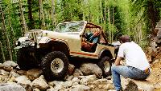

Paul Beaudean (with a friend from Guam), John Heskett, Sean Lazelle, and myself (with Zack) headed out bright and early for Iron Chest. Iron Chest is classic Colorado four wheeling at it's best, rocks, trees, abandoned mines, working mines, and a trail end that is above tree line. We stopped near the hot springs to air down and get the Jeeps ready. My Jeep wasn't running on the street well, so I trailered out.
On the ride up to the trail head, my Jeep was running super rich and under powered, we made it to the trail head anyway. We dialed them in and hit the rocks. We were all working our way through the first part of the trail, the hard part. About 2/3rds of the way through the hard part, Pauls clutch failed. Paul winched to flat ground and put his clutch linkage back together. He noticed that several body mounts failed and caused the linkage to slip due to frame and body flex. Unfortunately, all that flex also shorted out his fuel pump. It wasn't long or many fuses before Paul had his Jeep running again.
We all made it up past the hard part and started up the switch backs. We paused for lunch and decided to turn around since it was getting late. We worked our way back through the rocks and it started raining. It took a little while on the way down when we passed a Land Rover Discovery and the Tomken crew on the way up. The fools with no tops on their Jeeps got a bit wet, but we all made it home safely.
